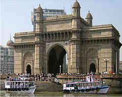

|
|
Museums and libraries

Gateway of India
The Gateway of India is a monument built during the British Raj in Mumbai (formerly Bombay), India. It is located on the waterfront in the Apollo Bunder area in South Mumbai and overlooks the Arabian Sea. The structure is a basalt arch, 26 metres (85 feet) high. It lies at the end of Chhatrapati Shivaji Marg at the water's edge in Mumbai Harbour. It was a crude jetty used by the fishing community which was later renovated and used as a landing place for British governors and other prominent people. In earlier times, it would have been the first structure that visitors arriving by boat in Mumbai would have seen. The Gateway has also been referred to as the Taj Mahal of Mumbai, and is the city's top tourist attraction.
The structure was erected to commemorate the landing of their Majesties King George V and Queen Mary at Apollo Bunder, when they visited India in 1911. Built in Indo-Saracenic style, the foundation stone for the Gateway of India was laid on 31 March 1911. The final design of George Wittet was sanctioned in 1914 and the construction of the monument was completed in 1924. The Gateway was later the ceremonial entrance to India for Viceroys and the new Governors of Bombay. It served to allow entry and access to India. The monument has faced three terror attacks from the beginning of the 21st century; twice in 2003 and it was also the disembarkation point in 2008 when four gunmen attacked the Taj Mahal Palace & Tower.

Marine Drive
Marine Drive is a 4.3-kilometre-long boulevard in South Mumbai in the city of Mumbai. It is a 'C'-shaped six-lane concrete road along the coast, which is a natural bay. The road links Nariman Point to Babulnath and Malabar Hill. Marine Drive is situated over reclaimed land facing west-south-west. A promenade lies parallel to this road. In 2012, the Municipal Corporation of Greater Mumbai announced that the entire road would be resurfaced, 72 years after it was originally laid.
Aksa Beach
Aksa Beach is a popular beach and a vacation spot in Aksa village at Malad, Mumbai, India. It is situated close to Malvani. This beach was one of the most silent and least visited beaches. It was very clean you could find a large variety of snails and shells. It is a popular weekend destination with youngsters. It is dotted with many private cottages and hotels, some of which are rented out to tourists and visitors.
Juhu Beach
Juhu beach is located 18 kilometres north of the city centre on the shores of Arabian sea stretches for six kilometres right up to Versova. It is a popular tourist attraction throughout the year and is also a sought after destination for shooting films. The beach generally gets more crowded on weekends with families and courting couples. The food court at its main entrance is famous for its 'Mumbai style' street food, notably bhelpuri, pani puri and shevpuri. Horse pulled carriages offer joyrides to tourists for a small fee while acrobats, dancing monkeys, cricket matches, toy sellers vie for tourist's attention. The beach is among the most popular sites in the city for the annual Ganesh Chaturthi celebrations where thousands of devotees arrive in grand processions, carrying idols of the Lord Ganesh of various sizes, to be immersed in the water at the beach.
Bombay Natural History Society
The Bombay Natural History Society, founded on 15 September 1883, is one of the largest non-governmental organizations in India engaged in conservation and biodiversity research. It supports many research efforts through grants, and publishes the Journal of the Bombay Natural History Society. Many prominent naturalists, including the ornithologists Sálim Ali and S. Dillon Ripley have been associated with it. The society is commonly known by its initials, BNHS.
Nehru Planetarium
The Nehru Planetarium, Mumbai, a part of the Nehru Centre, Mumbai, was inaugurated on 3 March 1977 by the then Prime Minister of India, Smt. Indira Gandhi. Over the years, this has grown into a Centre for scientific study of astronomy and space science. The planetarium is equipped with a Digistar 3 planetarium projector which was installed in 2003, replacing the earlier Carl Zeiss Universal Projector.
Asiatic Society of Mumbai
The Asiatic Society of Bombay, a learned society in the field of Asian studies, is based in Mumbai, India. It can trace its origin to the Literary Society of Bombay which first met in Mumbai on November 26, 1804, and was founded by Sir James Mackintosh. It was formed with the intention of "promoting useful knowledge, particularly such as is now immediately connected with India". After the Royal Asiatic Society of Great Britain and Ireland was established in London in 1823, the Literary Society of Bombay became affiliated with it and was known as the Bombay Branch of the Royal Asiatic Society (BBRAS) since 1830. The Bombay Geographical Society merged with it in 1873, followed by the Anthropological Society of Bombay in 1896. In 1954, it was separated from the Royal Asiatic Society and renamed the Asiatic Society of Bombay. In 2002, it acquired its present name. It is funded by an annual grant from the Central Government of India.
go to top
Home
Developed by SUGATO CHAKRABORTY (currently pursuing B.Tech in CSE from West Bengal University of Technology, developer at Boscom Software,2014)
|
|